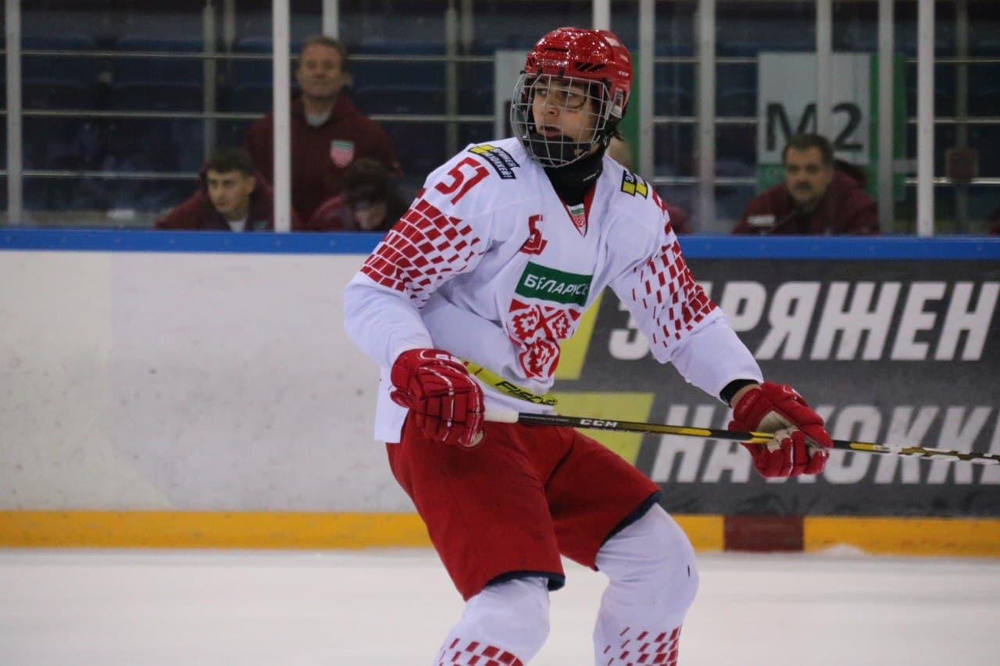
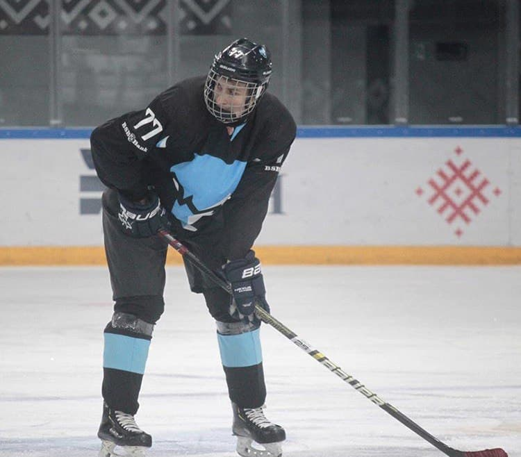

MY HOBBIES
Welcome to the world of interesting activities of Maxim Slabko!
Ice-hockey
 Ice hockey is one of the most action-paced of sports, demanding skillful skating, expert stick-handling, and masterly puck control. The game developed in the frozen expanses of North America, and a hundred years ago became the national winter sport of Canada. It also became very popular in the northern states of the United States, and later spread to Europe, Japan, and even to Australia. The game probably arose from boys playing on the ice. The kids probably fashioned pucks from frozen "horse apples" and adapted tree branches as hockey sticks, and played on cleared stretches of frozen lakes and rivers, and backyard rinks. Soon it was inevitable that teams began to play against each other and leagues were formed. The earliest mention of the team ice hockey game is a newspaper description of the game played at the Victoria Skating Rink in Montreal in 1875. Originally the leagues and national competitions in Canada were amateur. In 1917 the first professional league was formed, the National Hockey League (or NHL), with four clubs — Montreal Canadians, Montreal Wanderers, Ottawa Senators, and Toronto Arenas. Later clubs were formed in American cities, and the NHL spread to the United States. In 1972 a rival professional organisation was formed, the World Hockey Association (or WHA). In 1893 Lord Stanley, the Governor-General of Canada, presented a silver trophy, the Stanley Cup to the winners and play-offs for the Stanley Cup began, which then became the symbol of professional hockey supremacy. Hockey is a team game played on an ice surface, known as a rink. Six players — a goalkeeper, two defence-men, and three forwards — constitute a side.